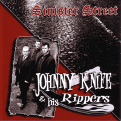

Johnny Knife and his Rippers - Sinister Street (Album, 2012)
01 - Teddy Boy Jive (2:56)
02 - Heads Or Tale (3:18)
03 - Break Up Today (2:45)
04 - Growl (2:13)
05 - My Old Man Is A Square (2:01)
06 - Be Bop Teddy Girl (2:13)
07 - Mysterious Night (2:45)
08 - Jack The Ripper (3:01)
09 - Dont Take Your Love From Me (3:23)
10 - Riot At Leister Square (3:31)
11 - Fiddler On The Roof (3:06)
12 - Texas Calls You Home (3:36)
13 - Sinister Street (2:22)
14 - Gonna Type A Letter (2:27)
15 - Pankee Belle (3:16)
16 - Saturday Night At The Duckpond (2:19)
17 - At The Ace (2:25)
18 - London Rocker (2:24)
© Part Records :: [6102.001]
Notes
Review
147/366 (Project 366)
Top-notch work with an amazing variety of original style. Great own compositions, wonderful cover versions. Interesting lyrics, astonishing sound. Rockabilly with touches of (neo), Teddy Boy Rock'n'Roll, Surf music and general perfect tunes. Well, I should write really careful review...